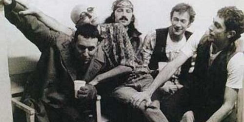

Nota de tapa
Volver a Los Redondos

Trece años han pasado desde la última misa ricotera, pero las puertas siguen abiertas: la apropiación del estigma de Patricio Rey, la cultura clausurada en Cromañón, el destino de esos pibes desangelados (ya no tan pibes) que crecen y observan ...